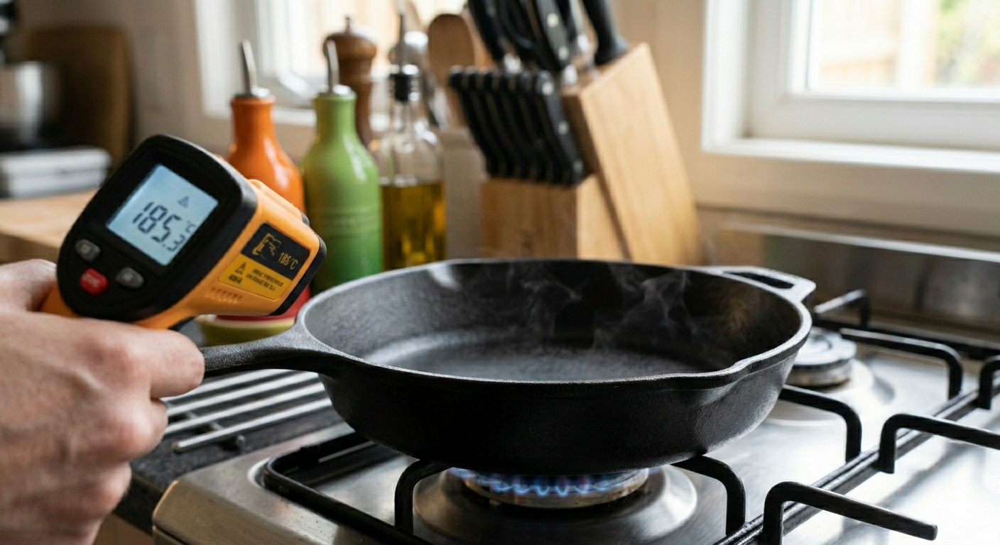

2º Ano | Aula 04: Calorimetria - Calor Sensível, Calor Específico e Capacidade Térmica
📚 Resumo:
A Calorimetria estuda as trocas de energia térmica entre corpos.
O Calor Sensível é o calor que gera variação de temperatura sem mudar o estado físico.
O Calor Específico é uma característica da substância. Indica a quantidade de calor necessária para que 1 grama da substância varie sua temperatura em $1^\circ C$.
A Capacidade Térmica é uma característica do corpo (objeto). Indica a quantidade de calor que o corpo precisa receber para variar sua temperatura em $1^\circ C$. Depende da massa e da substância.
Equação fundamental da Calorimetria:
$Q = m \cdot c \cdot \Delta \theta$
📖 Conceitos de Calorimetria
1. Calor Sensível
O calor sensível define-se como o fluxo de energia térmica que, ao interagir com uma substância, altera sua energia cinética molecular sem romper as ligações que determinam sua fase. Enquanto o calor latente atua na transição entre estados físicos, o sensível manifesta-se exclusivamente através da variação térmica mensurável do corpo.
O Calor Sensível é o calor que gera variação de temperatura sem mudar o estado físico.

Figura 1: A panela está recebendo Calor Sensível.
2. Calor Específico ($c$)
É uma característica da substância. Indica a quantidade de calor necessária para que 1 grama da substância varie sua temperatura em $1^\circ C$.
Quanto menor o calor específico, mais rápido a substância esquenta ou esfria.
3. Capacidade Térmica ($C$)
É uma característica do corpo (objeto). Indica a quantidade de calor que o corpo precisa receber para variar sua temperatura em $1^\circ C$. Depende da massa e da substância.
$C = \frac{Q}{\Delta \theta} \quad \text{ou} \quad C = m \cdot c$
4. Equação Fundamental da Calorimetria
Utilizada para calcular a quantidade de calor sensível ($Q$) trocada por um corpo de massa ($m$):
$Q = m \cdot c \cdot \Delta \theta$
$Q$: Quantidade de calor (cal ou J).
$m$: Massa (g ou kg).
$c$: Calor específico ($\text{cal/g}^\circ C$).
$\Delta \theta$: Variação de temperatura ($\theta_f - \theta_i$).
5. Unidades e Convenções
1 caloria (cal) $\approx$ 4,18 Joules (J).
Se $Q > 0$, o corpo recebeu calor (aquecimento).
Se $Q < 0$, o corpo cedeu calor (resfriamento).
💡 Física em Ação
🏖️ Areia vs. Água
O calor específico da areia é muito menor que o da água. Por isso, sob o mesmo Sol, a areia esquenta muito rápido durante o dia e esfria rápido à noite, enquanto a água mantém a temperatura mais estável.
🍳 Cozinha Profissional
Panelas de barro têm alta capacidade térmica. Elas demoram a aquecer, mas uma vez quentes, mantêm a comida borbulhando por muito tempo mesmo após desligar o fogo.
✅ Questões Resolvidas (R 1 a 5)
R 1: Aplicação da Equação Fundamental
Enunciado: Que quantidade de calor é necessária para elevar a temperatura de 500g de água de $20^\circ C$ para $80^\circ C$? (Dado: $c_{água} = 1\text{ cal/g}^\circ C$)
Enunciado: Um bloco de metal de 2kg ($2000\text{g}$) possui calor específico $0,1\text{ cal/g}^\circ C$. Qual sua capacidade térmica?
Resolução:
$C = m \cdot c = 2000 \cdot 0,1 = \mathbf{200\text{ cal/}^\circ C}$.
R 3: Calor Específico Desconhecido
Enunciado: Um corpo de massa 200g recebe 1.200 cal e sua temperatura varia de $20^\circ C$ para $50^\circ C$. Determine o calor específico da substância que constitui esse corpo.
Resolução:
Dados: $m = 200\text{g}$, $Q = 1200\text{ cal}$, $\Delta \theta = 50 - 20 = 30^\circ C$.
$Q = m \cdot c \cdot \Delta \theta \implies 1200 = 200 \cdot c \cdot 30$
$1200 = 6000 \cdot c \implies c = \frac{1200}{6000} = \mathbf{0,2\text{ cal/g}^\circ C}$.
R 4: Determinação da Temperatura Final
Enunciado: Um bloco de ferro ($c = 0,11\text{ cal/g}^\circ C$) de 100g está inicialmente a $20^\circ C$. Se ele receber 440 cal, qual será sua temperatura final?
Enunciado: Um objeto de capacidade térmica $50\text{ cal/}^\circ C$ sofre um aquecimento de $10^\circ C$. Determine a energia recebida em Joules. (Considere $1\text{ cal} = 4,2\text{ J}$)
Enunciado: Quantas gramas de alumínio ($c = 0,22\text{ cal/g}^\circ C$) podem ser aquecidas em $20^\circ C$ fornecendo-se 1.100 cal?
Resolução: $1100 = m \cdot 0,22 \cdot 20 \implies 1100 = m \cdot 4,4 \implies m = \frac{1100}{4,4} = \mathbf{250\text{ g}}$.
P 8: Resfriamento
Enunciado: Uma xícara de café contém 150g de líquido ($c = 1,0\text{ cal/g}^\circ C$). Se o café esfria de $85^\circ C$ para $40^\circ C$, qual a quantidade de calor cedida ao ambiente?
Enunciado: Um corpo de 500g possui capacidade térmica de $100\text{ cal/}^\circ C$. Qual o calor específico do material desse corpo?
Resolução: $C = m \cdot c \implies 100 = 500 \cdot c \implies c = \frac{100}{500} = \mathbf{0,2\text{ cal/g}^\circ C}$.
P 10: Tempo de Aquecimento
Enunciado: Uma fonte fornece 200 cal por minuto. Quanto tempo levará para aquecer 400g de uma substância ($c = 0,5\text{ cal/g}^\circ C$) em $10^\circ C$?
Churros é uma composição que normalmente consiste em um tubo de massa recheado com doce. Uma menina consegue pegar a massa com a mão, mas ao morder, sente que o recheio de doce de leite está bem mais quente que a massa. Assumindo que ambos estavam na mesma temperatura ao sair do forno, possuíam a mesma massa e perderam calor para o ambiente, a diferença de temperatura sentida ocorreu porque o:
A) calor específico do doce de leite é maior do que o calor específico da massa.
B) calor latente de sublimação do doce de leite é maior do que o calor latente de sublimação da massa.
C) coeficiente de dilatação térmica da massa é maior do que o coeficiente de dilatação térmica do doce de leite.
D) calor latente de sublimação do doce de leite é menor do que o calor latente de sublimação da massa.
E) o coeficiente de dilatação térmica do doce de leite é maior do que o coeficiente de dilatação térmica da massa.
Resolução: Alternativa A.
Substâncias com maior calor específico demoram mais para aquecer, mas também demoram mais para esfriar
Como o doce de leite ainda estava muito quente enquanto a massa já havia esfriado, conclui-se que o doce de leite tem uma capacidade maior de reter calor, ou seja, seu calor específico é maior que o da massa.
T 12: (Fatec) Capacidade Térmica e Equilíbrio
Em um sistema isolado, dois objetos (alumínio e cobre) estão à mesma temperatura inicial. Eles recebem a mesma quantidade de calor por segundo e, após certo tempo, atingem a mesma temperatura final (sem mudança de estado). Dados os calores específicos $c_{Al} = 0,22\text{ cal/g °C}$ e $c_{Cu} = 0,09\text{ cal/g °C}$, pode-se afirmar que:
A) a capacidade térmica do objeto de alumínio é igual à do objeto de cobre.
B) a capacidade térmica do objeto de alumínio é maior que a do objeto de cobre.
C) a capacidade térmica do objeto de alumínio é menor que a do objeto de cobre.
D) a massa do objeto de alumínio é igual à massa do objeto de cobre.
E) a massa do objeto de alumínio é maior que a massa do objeto de cobre.
Resolução: Alternativa A.
Os dois objetos recebem a mesma quantidade de calor ($Q_{Al} = Q_{Cu}$), pois recebem o mesmo calor por segundo durante o mesmo intervalo de tempo.
Os dois objetos sofrem a mesma variação de temperatura ($\Delta \theta_{Al} = \Delta \theta_{Cu}$), pois partiram da mesma temperatura inicial e chegaram à mesma temperatura final.
Se $Q$ é igual para ambos e $\Delta \theta$ também é igual, então, obrigatoriamente, a Capacidade Térmica ($C$) deve ser a mesma para os dois objetos:
$$ C_{Al} = \frac{Q}{\Delta \theta} \quad \text{e} \quad C_{Cu} = \frac{Q}{\Delta \theta} \implies C_{Al} = C_{Cu} $$
T 13: (UNESP)
No gráfico de Calor ($Q$) versus Variação de Temperatura ($\Delta \theta$), a inclinação da reta representa:
A) O calor específico. B) A massa do corpo. C) A capacidade térmica. D) O calor latente. E) A condutividade térmica.
Resolução: Alternativa C. Como $Q = C \cdot \Delta \theta$, a razão $Q/\Delta \theta$ (coeficiente angular) é a Capacidade Térmica.
T 14: (PUC-PR)
Uma caloria é a quantidade de calor necessária para elevar de $1^\circ C$ a temperatura de:
A) 1 g de água. B) 1 kg de água. C) 1 g de ferro. D) 1 kg de ferro. E) qualquer substância.
Resolução: Alternativa A. Esta é a definição padrão da unidade caloria baseada no calor específico da água.
T 15: (VUNESP)
Um corpo de 400g é aquecido de $20^\circ C$ até $120^\circ C$ com 4000 cal. A capacidade térmica ($C$) e o calor específico ($c$) são, respectivamente:
A) $40\text{ cal/}^\circ C$ e $0,1\text{ cal/g}^\circ C$ B) $400\text{ cal/}^\circ C$ e $1,0\text{ cal/g}^\circ C$ C) $4\text{ cal/}^\circ C$ e $0,01\text{ cal/g}^\circ C$ D) $20\text{ cal/}^\circ C$ e $0,5\text{ cal/g}^\circ C$ E) $40\text{ cal/}^\circ C$ e $1,0\text{ cal/g}^\circ C$